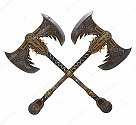
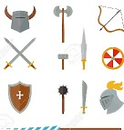
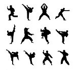
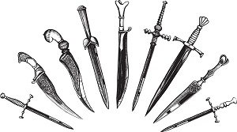

Barbarian
Barbarians trade defense for an overpowering offense. Their main stat is strength followed by constitution. They can wear light or medium armor and are able to make use of shields. For weapons they can use any simple or martial weapons (between these two it gives you access to most weapons). For skills you can choose from two of the following, animal handling, athletics, intimidation, nature, perception, and survival. They gain the following core features unarmored defense, reckless attack, Danger Sense, a primal path, and extra attack.
Unarmored Defense
This makes your AC equal to 10 + dexterity modifier + constitution modifier, as long as you are not wearing armor, though you may still use a shield and gain this benefit.
Reckless Attack
At level two you gain the ability to gain advantage on strength-based attacks. Though using this makes it to where attacks against you until your next turn will have advantage as well.
Danger Sense
At level two you gain advantage on dexterity saving throws against effects that you can see such as traps and spell attacks.
Primal Paths:
Path of the Berserker
Grants an extra attack as bonus action.
Path of the Totem Warrior
Gain the ability to find and speak with animals.
Choose from one of three listed abilities at level 3.
- Bear Totem - gives resistance to all damage except psychic damage.
- Eagle - while not wearing heavy armor creatures have disadvantage on opportunity attacks against you and you can dash as a bonus action.
- Wolf - allies gain advantage on attacks against enemies within 5 feet of you.
Fighter
Fighters are a very versatile class they can focus on melee or ranged combat or may add a small amount of spell casting though one of their archetypes. For their stats though it is advised to go with Strength if you wish to fight up close. Or else pick dexterity if you wish to fight at range. Then the next stat should be constitution unless you intend to pursue the spell casting focus then you should choose intelligence. All fighters though can wear any armor and make use of simple or martial weapons. They may choose from two of the following skills acrobatics, animal handling, athletics, history, insight intimidation, perception, and survival. You also gain a fighting style and second wind at level 1. At level two you gain action surge. Then at level 3 you choose an archetype for your fighter to follow through.
Fighting Styles
- Archery - gain a +2 bonus to attack with ranged attacks.
- Defense - while you are wearing armor you gain a +1 bonus to AC.
- Dueling - While you are wielding a melee weapon in 1 hand and the other is empty you gain a +2 to damage rolls with that weapon.
- Great Weapon Fighting - when you are using a two handed weapon and roll a 1 or 2 for damage, you may reroll the dice 1 time per attack and must take the new roll.
- Protection - While you are using a shield if an enemy you can see attacks an ally within 5 feet of you, you can use your reaction to give the attacker disadvantage on the attack.
- Two-Weapon Fighting - you may add your ability modifier to the damage of the weapon
Second Wind
Allows you to regain health equal to 1d10 + fighter level per rest.
Action Surge
You may gain an extra action during one of your turns once per rest. This essentially allows you to go twice during one turn.
Extra Attack
At level 5 you can attack twice per attack action instead of only once.
Martial Archetypes:
Champion
- Improved Critical - at level 3 you may treat rolling a 19 for your attack roll as if you rolled at natural 20. This is expanded at higher levels.
Battle Master
- Combat Superiority- allows you to learn three maneuvers (listed on pg. 74 of the players handbook). In short they give you various options for gaining extra attacks for you or your allies or aiding your allies or disadvantaging enemies.
- Student of War - you gain proficiency with one artisan tool of your choice.
Eldritch Knight
- This class is a bit odd though can be fun. They can make use of evocation and abjuration schools of magic from the wizard class. These spells are the flashy offense and defense schools. Though the high damage spells will be out of reach for the most part. These serve more to augment your normal combat abilities.
- Spellcasting - at level 3 you can learn two cantrips as well as gaining 2 first level spell slots. You may also have up to three spells memorized at a time.
- Weapon Bond- you may have up to two weapons magically bonded to you at a time. This allows you to summon them to you if they are on the same plane of existence.
Monk
Monks are mainly focused on melee combat using unarmed attacks, though they may also use simple weapons or short swords. Their main Stats are dexterity then wisdom. They are not allowed to wear armor and still gain benefits from their class. They main choose from two of the following skills acrobatics, athletics, history, insight, religion, and stealth. Their core features are at level 1 they gain unarmored defense and martial arts. Then at level 2 they gain Ki as well as unarmored movement. Then at level 3 they gain a monastic tradition and deflect missiles. At level 4 they gain slow fall and at level 5 they gain extra attack and stunning strike.
Unarmored Defense
When you are wearing no armor and have no shield your AC is equal to 10 + dexterity modifier + wisdom modifier.
Martial Arts
- You can use dexterity instead of strength on attack and damage rolls.
- You can roll a d4 instead of the normal damage for unarmed strike or monk weapon. Scales as you level up.
- When you use the attack action you may make an unarmed attack as a bonus action.
Ki
- Flurry of Blows - may make 2 unarmed attacks instead of 1 as a bonus action.
- Patient Defense - may take the dodge action as a bonus action.
- Step of the Wind - may disengage or dash as a bonus action and you jump distance is double that turn.
Unarmored Movement
While unarmored defense is active your speed is increased by 10 feet. This scales at higher levels.
Monastic Traditions:
Way of the Open Hand
When you hit with a flurry of blows you can make the enemy either make a dexterity save to avoid being knocked prone, make a strength save to avoid being pushed 15ft away, or make it to where they can not take a reaction until your next turn.
Way of Shadow
You can use learn the spells darkness, dark vision, pass without a trace or silence. These are cast by expending 2 ki points and bypass other spell requirements. You also gain the cantrip minor illusion.
Rogue
Rogues are the sneaky heavy hitters of the martial classes. They focus on hitting as hard as possible with a single attack instead of over many attacks. Their main stats are Dexterity then either intelligence or charisma. They are restricted to light armor. For weapons they may use simple weapons, hand crossbows, longswords, rapiers, or short swords. They may choose from two of the following skills acrobatics, athletics, deception, insight, intimidation, investigation, perception, performance, persuasion, sleight of hand, and stealth. Their core abilities are Expertise, sneak attack, thieves' cant. At level 2 they gain cunning action then at 3 they gain a roguish archetype. At level 5 they gain uncanny dodge.
Expertise
You may choose either two skills or one skills and proficiency with thieves' tools. The proficiency bonus for rolls involving these are doubled.
Sneak Attack
Once per turn if you have advantage on the attack, or your target has an enemy within 5 feet of them and you don't have disadvantage on the attack roll you may add an extra 1d6 damage to your attack if you are using a finesse or ranged weapon.
Thieves' Cant
You know how to speak thief sign language and understand how to pickup on hidden messages within conversations.
Cunning Action
You can use a bonus action to either dash, disengage, or hide.
Roguish Archetypes:
Thief
- Fast Hands - You can use a bonus action to disarm traps, open locks, or use an object action.
- Second Story Work - Climbing no longer costs extra movement. You may also jump a number of feet equal to your dexterity modifier when you are making a running jump.
Assassin
- You gain proficiency with the disguise kit and the poisoner's kit.
- Assassinate - you have advantage on attack rolls on enemies that haven't gone yet. Also any hit you score against a surprised creature is a critical hit.